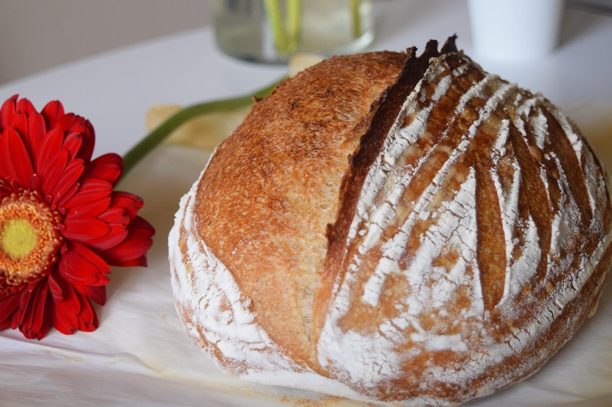

How To Make The Best
Sourdough Bread
Lactic acid from fermentation imparts a sour taste and improves keeping qualities. The preparation of sourdough begins with a pre-ferment (the "starter" or "leaven", also known as the "chief", "chef", "head", "mother" or "sponge"), a fermented mixture of flour and water, containing a colony of microorganisms including wild yeast and lactobacilli. The purpose of the starter is to produce a vigorous leaven and to develop the flavour of the bread. In practice there are several kinds of starters, as the ratio of water to flour in the starter (hydration) varies. A starter may be a liquid batter or a stiff dough.
STEP ONE
Gather the Utensil
Sourdough baking doesn't require a ton of extra equipment, but certain tools will make the whole process easier. Let's take a moment to go over our favorite items and separate the "must haves" from the "nice to haves." Before we dive into sourdough bread baking, let’s discuss must-have tools for sourdough baking. While there are ways to improvise with various kitchen equipment, there are a few essentials that you’ll need to get before baking. In this guide, you’ll find an exhaustive list of my favorite resources, cookbooks, and sourdough bread tools. I’ve broken this guide into essential must-have’s for beginners, while also providing a list of helpful optional tools for the enthusiastic or advanced home baker. Check my Utensils page for more information.
STEP TWO
Prepare the Starter
To ready your refrigerated starter for baking: Take the starter out of the fridge,
discard (or set aside) all but 1/2 cup (113g) and feed that 113g as usual with equal parts (113g each) flour and water.
Cover the starter and let it rest at room temperature. Depending on its health and how recently you'd fed it, it will start to bubble and expand quickly,
or may take up to 12 hours to show signs of life.
Feed the starter every 12 hours until you see it double or triple in volume within 6 to 8 hours; this means it's ready to bake with.Once the starter is "ripe" (ready to use),
spoon out what you need for the recipe and set it aside with the recipe's other ingredients. Feed the remaining 1/2 cup (113g) starter as usual, with equal parts
(113g each) flour and water. Mix until smooth and let the starter rest for about 2 hours at room temperature before stowing it back in the refrigerator.
STEP THREE
Mixing
The goal of mixing dough is to bring together dry and wet ingredients to form a sticky, tacky dough that will hold together on its own while being manipulated into different shapes.
While mixing dough is a fairly straightforward process, it can have significant impact on your finished product as it is your only real opportunity to make adjustments to your sourdough recipe before baking. Once a dough has been formed, it becomes resistant to changes in the hydration and composition of ingredients, so being mindful of certain factors while initially mixing your ingredients together is extremely important.
The simplest of bread doughs contain only four principal ingredients: water, flour, salt, and some kind of leavening agent such as commercial yeast or a natural sourdough starter. (A leavening agent is the ingredient that causes the bread to rise.) Beyond those four ingredients lies an infinite potential of flavoring possibilities. In this tutorial, we will be focusing on mixing bread dough using a natural sourdough starter. The information provided below is for general use and should apply to virtually any sourdough recipe.
STEP FOUR
Kneading
Mixing and kneading fall under the umbrella of aggressive dough handling. These initial stages include combining ingredients and beginning to develop gluten. Mixing refers to incorporating ingredients: At minimum, simply stirring together flour, water, salt, and levain. Kneading involves manipulating dough to further homogenize the mass and to encourage gluten development. All of the following techniques are primarily kneading techniques while mixing is inherently built into the processes. In fact, improper dough handling could ruin all that hard work. How you handle your dough has a profound effect on gluten development, dough structure, and ultimately can dictate how effectively your dough retains those bubbles after baking. Learning to handle dough properly will make you a better and more consistent baker.
STEP FIVE
Shaping
Be gentle, yet firm with your shaping technique. If you are too lax, the dough will look lopsided or lack oven spring when baked. If you’re too aggressive, you’ll deflate all of those beautiful air bubbles. Your technique will only improve with practice and repetition.
Make smaller loaves. When making a standard size sourdough boule, you only have one opportunity to shape. That’s it. Why not divide the dough in half and shape two smaller loaves all in one session? This way, you’ll have another opportunity to practice (and more bread to eat, freeze or share).
Do not compare. Ok, so this is the hardest tip to follow. Your dough may or may not look like mine in the video or to someone else’s on Instagram. All doughs are different. They will have different hydration levels (flour to water ratio), different flour types, different temperatures and so on, which effect the overall look and feel of the dough. For now, focus on your own dough until you get a handle on shaping.
STEP SIX
Baking
Slide the parchment directly onto the stone in the oven. If you're not using a stone, place the baking sheet in the oven. Pour 1 cup of boiling water into the cast iron frying pan. Be sure to wear good oven mitts to prevent steam burns. Adding steam during baking is critical to the final look and taste of your bread. Steam doesn't just enable a great rise in the oven, and help develop a beautiful, crackly crust. It also promotes an open crumb structure, as well as rich flavor and color. See our blog post, Steam in Bread Baking. Bake the bread until it's crusty and golden, about 35 to 40 minutes. Remove the loaves from the oven and cool on a rack before slicing.
